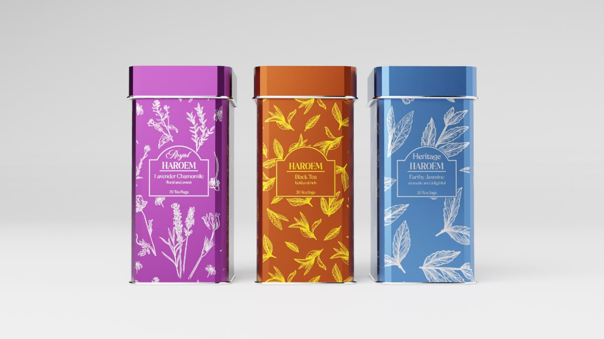

About Haroem

Haroem comes from the Indonesian word ‘Harum’ meaning fragrant.
Tea is really popular in Indonesia. People drink a lot of tea every day, whether they're at home or with friends. Tea has cultural significance in Indonesia, often being associated with hospitality and social gatherings.
Indonesia's diverse population means there's a wide range of tea preferences. You can cater to different tastes by offering various types of tea, such as black, green, herbal, or specialty blends.